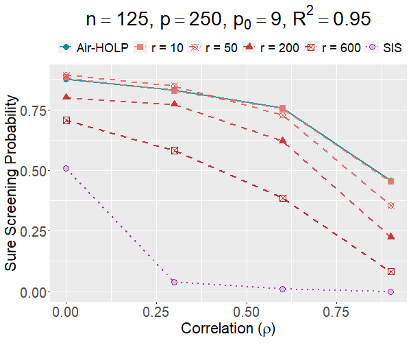
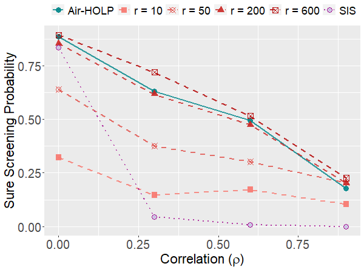
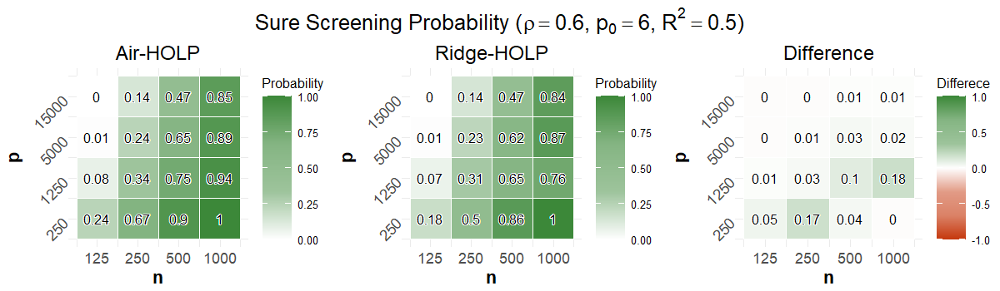
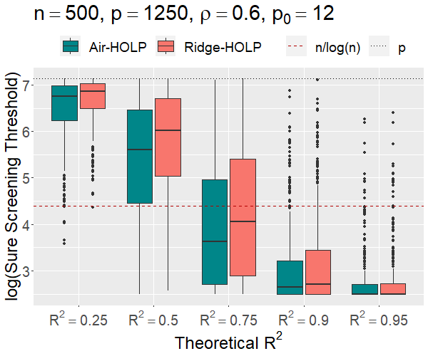
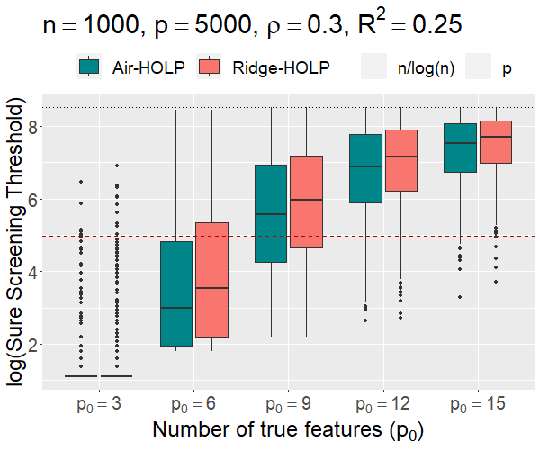
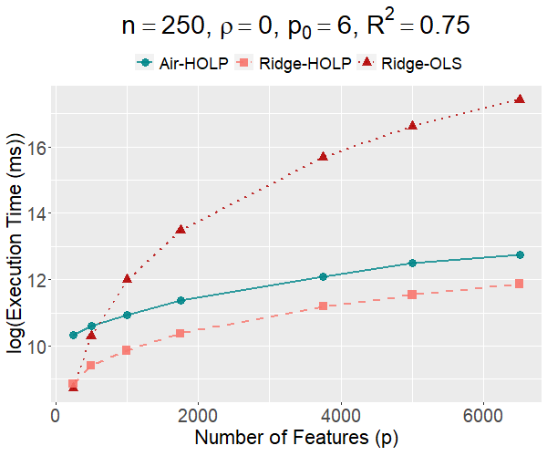
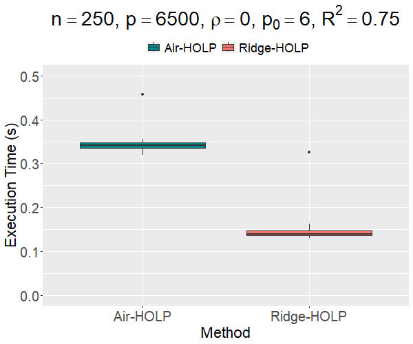

Air-HOLP and the AirScreen R package
Feature screening is a fast first step for data with far more features than observations, such as gene expression: it ranks the features and keeps a short list that aims to hold every feature that truly matters. Ridge-HOLP screens well when features are highly correlated, but it depends on a penalty, and the best value differs from one dataset to the next. Choosing it the usual way, by cross-validation over a grid of values, means re-running the method many times, and random data splits can change which features are kept. Air-HOLP selects the penalty adaptively and efficiently: it updates it from the data, with no grid and no random splits, at the same time complexity as Ridge-HOLP.
Published as first author in Statistics and Computing (2025), with Samuel Müller and Houying Zhu, and released as the AirScreen R package on CRAN. Tested across a large range of simulation settings and on prostate cancer gene-expression data.
At a glance
- 45% higher · 8% lowersure screening probability than Ridge-HOLP across 1,600 simulation settings; equal in the other 47%
- Better at predicting prostate cancer stageswith 8 genes, multiple R of 0.85 against 0.80 for Ridge-HOLP and 0.70 for SIS on prostate cancer; higher than both at every stage
- On CRANAirScreen, an R package implementing the method
The problem: thousands of correlated features, and a penalty to choose
In data such as gene expression, the number of features p can far exceed the number of observations n, and the features are often highly correlated. Feature screening is a dimensionality reduction step, usually used before model selection: it aims to remove as many irrelevant features as possible while keeping all the true features, those that really affect the response. A good screening method has the sure screening property: as the sample size grows, the probability that its short list keeps every true feature approaches 1. The popular Sure Independence Screening (SIS) ranks each feature by its own correlation with the response, one at a time, so it can perform poorly when features are highly correlated. HOLP (Wang and Leng, 2016) measures the joint relation between all the features and the response instead, and Ridge-HOLP adds a ridge penalty r that keeps it stable and handles multicollinearity. Choosing r well is crucial: it balances bias and variance.
- Why choosing r is the hard part. Bootstrapping and cross-validation recompute Ridge-HOLP again and again: k-fold cross-validation over a grid of penalty values needs (grid size × k) runs, so 100 values and 10 folds mean 1,000 runs, and leave-one-out needs (grid size × n).
- And it is not stable. Cross-validation splits the data at random, and different splits may lead to different screened features.
The method: Air-HOLP updates the penalty from the data
Air-HOLP (adaptive iterative ridge-HOLP) chooses the penalty that best predicts the noise-free signal, the part of the response the features explain. That signal is unknown, so Air-HOLP estimates it and repeats:
- Start from the recommended penalty r = 10 and compute Ridge-HOLP.
- Screen the top ⌈n/log(n)⌉ features and fit a least-squares regression on them; its fitted values estimate the noise-free signal.
- Update the penalty to the value that best predicts that estimate, solved with Newton’s method within the range that keeps the sure screening property.
- Repeat until the penalty changes by less than 1%. In most simulations this took 3 to 6 iterations.
The costly step, an eigendecomposition, is computed once and reused in every iteration: no grid of penalties, no data splitting, and the same answer on every run.
In one setting low penalties win, in the other high penalties win; Air-HOLP does well in both
Setting 1: low penalties do bestn = 125 observations, p = 250 features, 9 true features, R² = 0.95


Setting 2: high penalties do bestn = 1,000 observations, p = 1,250 features, 15 true features, R² = 0.5


- Sure screening probability
- the share of the 500 simulated datasets in which all the true features are among the top ⌈n/log(n)⌉ screened features. Higher is better.
- Penalty r
- the ridge tuning parameter of Ridge-HOLP, fixed in advance; Air-HOLP selects it from the data.
- Correlation (ρ)
- the correlation between every pair of features in the simulated data.
The smaller penalties (r = 10 and 50) perform well in Setting 1 but not in Setting 2, and the larger ones (r = 200 and 600) show the opposite trend. Air-HOLP consistently performs well in both. SIS works best when features are uncorrelated but performs poorly when they are highly correlated, where Ridge-HOLP and Air-HOLP are superior.
Applied to prostate cancer: better at predicting each stage
Simulations show how a method behaves when the truth is known; the real data shows it works in practice.


- Multiple R
- the correlation between the stage (yes or no) and a model’s fitted values, from 0 to 1. For a fixed number of genes it ranks models the same way as R², the likelihood and in-sample prediction error. Higher is better.
- Model size
- the number of genes in the model; for each size, the best combination of the 21 screened genes is shown.
Show the numbers
| Stage (8 genes) | Air-HOLP | Ridge-HOLP | SIS |
|---|---|---|---|
| Benign epithelium | 0.897 | 0.886 | 0.887 |
| Intraepithelial neoplasia | 0.816 | 0.755 | 0.751 |
| Prostate cancer | 0.848 | 0.802 | 0.705 |
| Metastatic disease | 0.957 | 0.952 | 0.884 |
Largest multiple R with 8 genes, from a re-run of the paper’s code, which reproduces Figure 4.
The Tomlins-V2 prostate cancer data (Tomlins et al., 2006) has 92 samples and 1,288 genes, collected to understand the genetic changes as prostate cancer progresses through four stages: benign epithelium (normal, healthy prostate cells), prostatic intraepithelial neoplasia (early changes in cells that might become cancer), prostate cancer (actual cancer cells) and metastatic disease (cancer cells that have spread to other parts of the body). For each stage, each method screened 21 genes (⌈n/log(n)⌉). Ridge-HOLP and Air-HOLP outperform SIS, especially for larger models, because the genes are correlated in this dataset; and Air-HOLP consistently outperforms Ridge-HOLP.
Across 1,600 settings, Air-HOLP matched or improved on Ridge-HOLP

The simulations varied the sample size, the number of features, the correlation, the number of true features and the signal strength (R²), giving 1,600 settings. Air-HOLP’s sure screening probability was higher in 45% of settings and lower in 8%; in the other 47% the two were equal, typically when both probabilities were 0 or 1. The difference ranged from −0.02 to 0.60. The gap is most pronounced when n is close to p (for example n = 1,000 and p = 1,250), but it can still be significant elsewhere (n = 500, p = 1,250). The same conclusions apply to a second correlation structure in which only some of the features are correlated.
Fewer features needed to keep all the true ones
By signal strength (R²)n = 500, p = 1,250, correlation 0.6, 12 true features


By number of true featuresn = 1,000, p = 5,000, correlation 0.3, R² = 0.25


- Sure screening threshold
- the smallest short list that keeps every true feature, which is the worst rank among them. If three true features rank 37, 12 and 54, the threshold is 54, because 54 features must be kept to include all three. Lower is better.
Screening gets easier as R² rises and harder as the number of true features grows. Air-HOLP consistently outperforms Ridge-HOLP across most settings of both.
Fast: the same time complexity as Ridge-HOLP
Time against the number of featureslog execution time in milliseconds


Air-HOLP against Ridge-HOLPexecution time in seconds


The eigendecomposition is the only step that costs O(n²p + n³), and it is not repeated; every other step costs O(np + n²) or less, so Air-HOLP has the same time complexity as Ridge-HOLP. Both are considerably faster than ordinary ridge regression when p is much larger than n, and Air-HOLP takes roughly twice as long as a single Ridge-HOLP run with a fixed penalty, where cross-validation over a grid would multiply that run by the grid size × k.
Use it: the AirScreen R package
AirScreen implements Air-HOLP for p ≥ n and its counterpart Air-OLS for n > p, through one function, Air(), which also runs Ridge-HOLP with a fixed penalty for comparison. The example below is the package’s own.
install.packages("AirScreen")
library(AirScreen)
set.seed(314)
X <- matrix(rnorm(100000), nrow = 200, ncol = 500) # 200 observations, 500 features
y <- X[, 1] + X[, 2] + X[, 3] + X[, 4] + 3*rnorm(200) # features 1 to 4 are the true ones
result <- Air(X, y, penalty_type = "both") # Air-HOLP, and Ridge-HOLP with r = 10
summary(result)
result$penalty_adaptive # the penalty Air-HOLP selected
#> 229.6
result$rank_adaptive[1:4] # ranks of the 4 true features (top 38 are screened)
#> 1 3 7 2Version 0.1.0 · MIT licence · AirScreen on CRAN
The method in formulas
Show the formulas
- HOLP: β̂ = Xᵀ(XXᵀ)⁻¹y; features are ranked by |β̂ⱼ| and the top m are kept.
- Ridge-HOLP: β̂ᵣ = Xᵀ(XXᵀ + rIₙ)⁻¹y, which costs O(n³ + n²p) instead of O(p³ + p²n) for the standard ridge formula.
- Air-HOLP: r̂ = argmin over 0 ≤ r ≤ c√n of (1/n)‖y₀ − ŷᵣ‖², where y₀ = Xβ is the noise-free signal, estimated by the fitted values of a least-squares fit on the top m′ = ⌈n/log(n)⌉ features.
- Why y₀ and not y: with y, the solution would always be r̂ = 0, because ŷᵣ = y when r = 0 and p ≥ n; the noise-free signal avoids fitting the noise.
- Solving it: with XXᵀ = UDₙUᵀ, ŷᵣ = UDₙ(Dₙ + rIₙ)⁻¹Uᵀy, and the first-order condition is solved with Newton’s method; the range r ≤ c√n (c = 1000) keeps the sure screening property of Ridge-HOLP.
- Stopping: when |rᵢ₊₁ − rᵢ| < δrᵢ₊₁ with δ = 0.01, or after 10 iterations.
Where it goes next
Many screening methods use the HOLP formula, including group HOLP, Dynamic Tilted Current Correlation and HOLP-DF, and the paper expects that using Air-HOLP within them will also lead to improvements; the R code already integrates it into group HOLP. The iterative framework may also be extended to other L2-regularised penalties and generalised to non-linear models. Air-HOLP was the first method of my PhD research on feature screening.
Method card
- Question
- Can the ridge penalty of HOLP screening be selected from the data, efficiently and stably, without cross-validation over a grid?
- Data
- Simulations over 2,800 settings (500 datasets each), with compound symmetry and spatial correlation; the Tomlins-V2 prostate cancer data (92 samples, 1,288 genes, four stages).
- Compared with
- Ridge-HOLP (r = 10, and r = 50, 200 and 600 in Figure 1) and SIS.
- Measures
- Sure screening probability and sure screening threshold; multiple R for the prostate cancer data; execution time.
- Software
- AirScreen R package (CRAN, MIT licence); the paper’s code and full simulation results on GitHub.
- Talks
- Australian Statistical Conference (ASC 2023), Wollongong · Early Career & Student Statisticians Conference (ECSSC 2024), Hobart
- Paper
- Joudah, I., Müller, S., & Zhu, H. (2025). Air-HOLP: adaptive regularized feature screening for high-dimensional correlated data. Statistics and Computing, 35(3), 63.